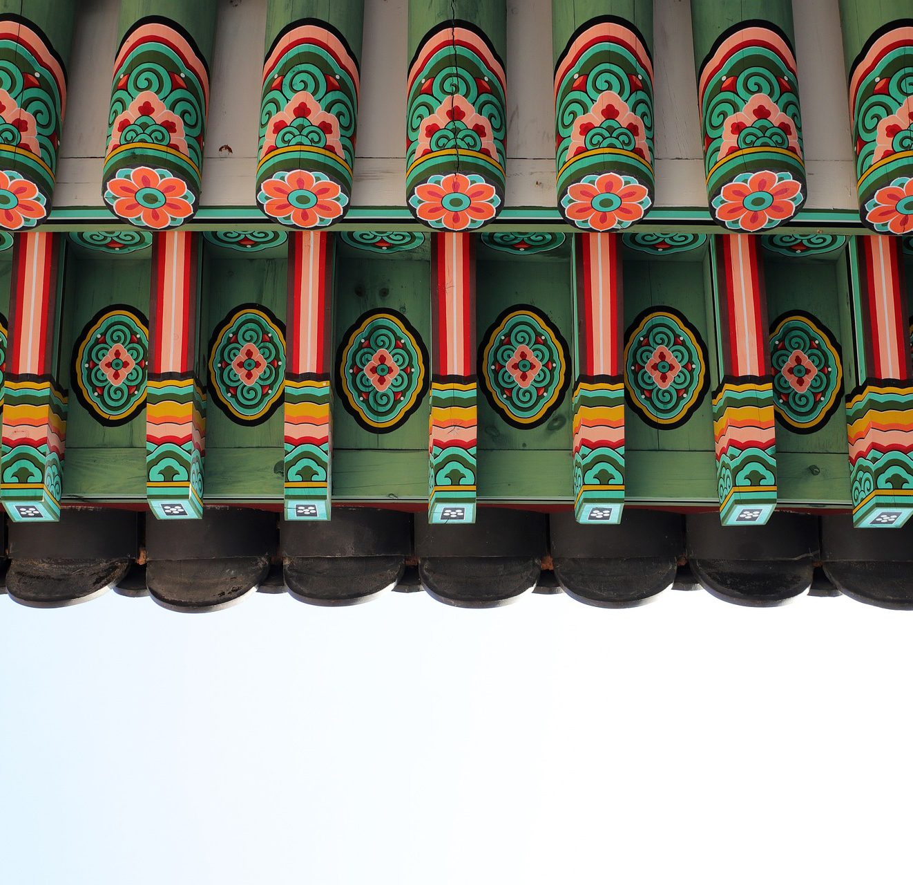

서울색

서울 상징색
‘ 단청빨간색 ’무병과 화평을 바라는 祈願의 색
600년간 왕의 공간에 사용된 宮의 색
시민 선호도가 가장 높은 색

서울 기조색
‘ 한강은백색 ’빛을 받아 반짝이는 은빛 찬란한 漢江의 색
백색숭앙의 民族의 색
서울의 산을 이루는 花崗石의 색
서울대표색 10

SC0000
단청빨간색서울지역색 50
SCN902
서울현상색 250

서울권장색 600